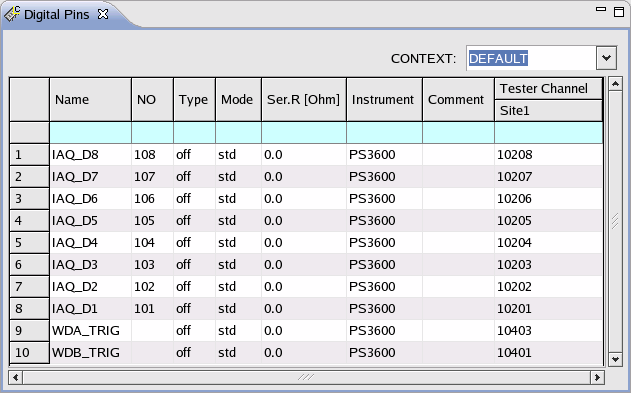
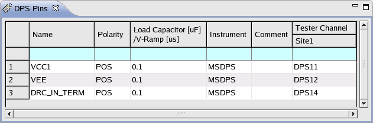
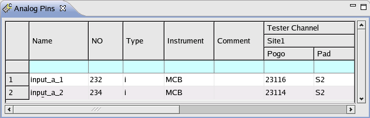

Pin configuration file
The Pin Configuration tool stores the data in the pin configuration file located in the directory:
<device_dir>/configuration
The file contains a set of firmware commands corresponding exactly to the parameters specified within the Pin Configuration tool.
Example
- The figures below show the pin setting and the contents of the related pin configuration file.



hp93000,config,0.1 DFPN 10208,"108",(IAQ_D8) DFPN 10207,"107",(IAQ_D7) DFPN 10206,"106",(IAQ_D6) DFPN 10205,"105",(IAQ_D5) DFPN 10204,"104",(IAQ_D4) DFPN 10203,"103",(IAQ_D3) DFPN 10202,"102",(IAQ_D2) DFPN 10201,"101",(IAQ_D1) DFPN 10403,"",(WDA_TRIG) DFPN 10401,"",(WDB_TRIG) DFPS 11,POS,(VCC1) DFPS 12,POS,(VEE) DFPS 14,POS,(DRC_IN_TERM) DFAN "MCB231,1,i","232",(input_a_1) DFAN "MCB231,2,i","234",(input_a_2) PSTE 1 CONF OFF,F160,(IAQ_D8,IAQ_D7,IAQ_D6,IAQ_D5,IAQ_D4,IAQ_D3,IAQ_D2,IAQ_D1, WDA_TRIG,WDB_TRIG) RDIV 0,(IAQ_D8,IAQ_D7,IAQ_D6,IAQ_D5,IAQ_D4,IAQ_D3,IAQ_D2,IAQ_D1, WDA_TRIG,WDB_TRIG) DDSL 0,(VCC1) DDSL 0,(VEE) DDSL 0,(DRC_IN_TERM) PSLC 0.1,(VCC1,VEE,DRC_IN_TERM) NOOP "6.1.0",,, - The following lines shows a multi-port pin configuration file. The firmware command
DFPT is used to define ports.
hp93000,config,0.1 DFPN 10102,"12",(CP_1) DFPN 10302,"12",(CP_2) ... DFPT (CP_1,DS7_1,DS0_1,I/O7_1,I/O6_1,I/O5_1,I/O4_1,I/O3_1,I/O2_1, I/O1_1,IO0_1,Q7_1,Q0_1,S1_1,S0_1,_MR_1), (port_1) DFPT (CP_2,DS7_2,DS0_2,I/O7_2,I/O6_2,I/O5_2,I/O4_2,I/O3_2,I/O2_2, I/O1_2,I/O0_2,Q7_2,Q0_2,S1_2,S0_2,_MR_2), (port_2) ...Note You can use a text editor instead of the Pin Configuration Tool to create or edit a pin configuration file in the form of a set of firmware commands.
Functional changes
- Introduced before SmarTest 6.3.2